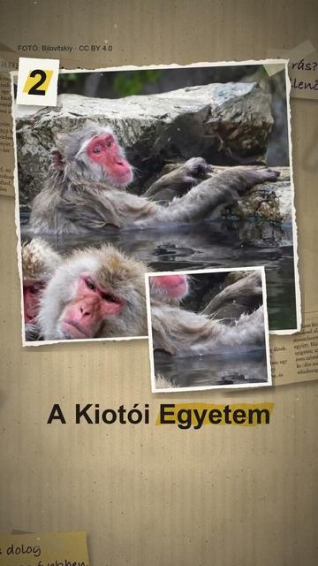

Megnézem a YouTube-on3 dolog, amit nem tudtál a japán makákókról
Röviden: A japán makákó (Macaca fuscata) az ember után a legészakabbra élő főemlős: legészakibb csapatai Honsú északi csúcsán, a Simokita-félszigeten élnek.
A japán makákó (Macaca fuscata) az ember után a legészakabbra élő főemlős: legészakibb csapatai Honsú északi csúcsán, a Simokita-félszigeten élnek. A Nagano prefektúrában található Dzsigokudani majomparkban télen hőforrásban fürdenek. A szokást a hatvanas években figyelték meg először: egy fiatal majom beült a Kórakukan fogadó kinti fürdőjébe, és a csapat más tagjai is átvették. A Kiotói Egyetem 2018-as vizsgálatában 12 nőstényt követtek, és a hőforrás elsőbbségi használata alacsonyabb stresszhormonszinttel járt együtt. Kósima szigetén 1953 szeptemberében egy másfél éves nőstény, Imo, kezdte vízben lemosni a homokot az édesburgonyáról. A szokás átterjedt a csapatban, később tengervízben mosták, és egy-két harapásonként újra a vízbe mártották – a kutató ezt „ízesítő viselkedésnek” nevezte.
Az összes rész forrásokkal: https://valoban.pages.dev/
Források
- Takeshita és mtsai 2018, Primates (PubMed)
- Kiotói Egyetem: Spa therapy… (2018)
- Matsuzawa 2018, Primates
- Primate Info Net (UW–Madison): Japanese macaque
- Hayama és mtsai 2021, J Vet Med Sci
- Kawai 1965, Primates
- Hirata, Watanabe, Kawai 2001
7 forrás · Hogyan ellenőrzünk?
Hibát találtál? Írd meg nekünk, megnézzük.
Képek és kreditek
Ez a videó a felhasznált CC BY-SA képek miatt CC BY-SA 4.0 licenc alatt érhető el (https://creativecommons.org/licenses/by-sa/4.0/).
• Makákó a hőforrásban, Dzsigokudani – Fg2 (feltételezett, Wikimedia Commons), Public domain (https://creativecommons.org/publicdomain/mark/1.0/) https://commons.wikimedia.org/?curid=598409
• Makákók a hőforrásban, Nagano – Asteiner, CC BY 3.0 (https://creativecommons.org/licenses/by/3.0/) https://commons.wikimedia.org/?curid=9254394
• Fürdő makákók, Dzsigokudani majompark – Bilovitskiy, CC BY 4.0 (https://creativecommons.org/licenses/by/4.0/) https://commons.wikimedia.org/?curid=142172262
• Japán térkép: a Simokita-félsziget – Alexrk2 (Chumwa térképe és NASA Blue Marble alapján), CC BY-SA 3.0 (https://creativecommons.org/licenses/by-sa/3.0/) https://commons.wikimedia.org/?curid=28987826
• Japán makákó a hőforrás partján – Ashley98lee, CC BY 4.0 (https://creativecommons.org/licenses/by/4.0/) https://commons.wikimedia.org/?curid=179651898
• A Kórakukan fogadó, Dzsigokudani – Abasaa, Public domain (https://creativecommons.org/publicdomain/mark/1.0/) https://commons.wikimedia.org/?curid=130992455
• A Kórakukan kinti fürdője (2008) – Soica2001 ( talk ), Public domain (https://creativecommons.org/publicdomain/mark/1.0/) https://commons.wikimedia.org/?curid=10795584
• Makákók a hőforrásnál, Dzsigokudani – Fg2 (feltételezett, Wikimedia Commons), Public domain (https://creativecommons.org/publicdomain/mark/1.0/) https://commons.wikimedia.org/?curid=598422
• Kósima szigete, Mijazaki prefektúra – ja:Sanjo, Public domain (https://creativecommons.org/publicdomain/mark/1.0/) https://commons.wikimedia.org/?curid=4852976
• Illusztráció: édesburgonya – စာကလေး SarKaLay, CC0 (https://creativecommons.org/publicdomain/zero/1.0/) https://commons.wikimedia.org/?curid=173511793
• Kósima szigete és a part – z tanuki, CC BY 3.0 (https://creativecommons.org/licenses/by/3.0/) https://commons.wikimedia.org/?curid=37957142
• Illusztráció: táplálkozó makákó – Alpsdake, CC0 (https://creativecommons.org/publicdomain/zero/1.0/) https://commons.wikimedia.org/?curid=180290541
A képek módosítva: 9:16-ra kivágva, átméretezve, kameramozgással, ráégetett felirattal.